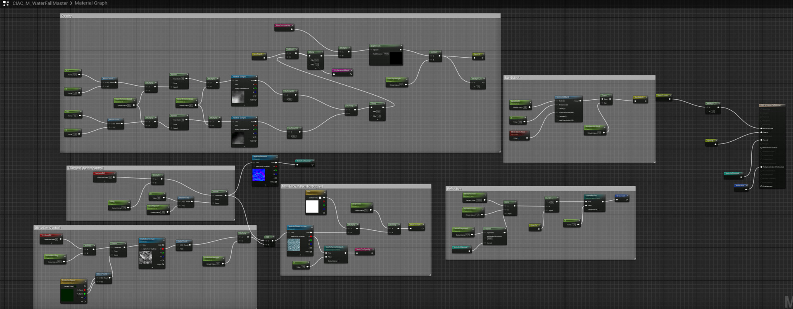

Technical Artist · Wrocław
Kacper Filas
Łączę grafikę z techniką: shadery, narzędzia dla artystów, optymalizacja na mobile oraz level i environment art w Unity i Unreal Engine 5.
Zobacz praceO mnie
Jestem Level & Technical Artistem w Ten Square Games. Piszę narzędzia edytorowe i skrypty automatyzujące pracę artystów, tworzę shadery i optymalizuję materiały oraz assety pod sprzęt mobilny. Robię też level art, VFX i animacje w Unity.
Wcześniej budowałem środowiska z danych przestrzennych (GIS, LiDAR, Gaea) w Unity i UE5 w YSLAB, robiłem levele i VFX do remake'ów Donkey Kong Country Returns i Front Mission w Forever Entertainment, a karierę zaczynałem od sculptingu skanów 3D w ZBrushu.
- Ten Square Games Level & Technical Artist 2025 – teraz
- YSLAB Level & Environment Artist 2024 – 2025
- Ten Square Games 3D Artist 2023 – 2024
- Forever Entertainment Level & VFX Artist 2022 – 2023
- Scanologics 3D Sculpting Artist 2021 – 2022
Galeria
Cathedral in a cave ArtStation
Projekt osobisty: realistyczne, klimatyczne środowisko z myślą o wydajności w czasie rzeczywistym. Wideo: gameplay, viewport, proceduralny grunge i triplanar, vertex painting, materiały, wodospad.




Desert Environment ArtStation
Pustynne środowisko w Unreal Engine.


Kontakt i linki
Narzędzia open source
- Setup-Toon-Shader add-on Blendera: Geometry Nodes + stylizowany materiał z zachowaniem tekstur
- Export-Collection-Blender eksport kolekcji z Blendera jednym skrótem
- 3DGraphicsRenderer renderer 3D napisany w C